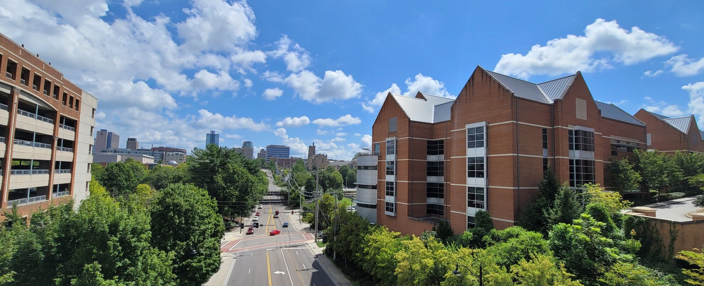

Weizi Li / Selected Publications

Long-term Microscopic Traffic Simulation with History-Masked Multi-agent Imitation Learning
Preprint
Learning to Control and Coordinate Mixed Traffic Through Robot Vehicles at Complex and Unsignalized Intersections
Preprint, Code
Mixed Traffic Control and Coordination from Pixels
IEEE International Conference on Robotics and Automation, 2024
Code
Analyzing Emissions and Energy Efficiency at Unsignalized Real-world Intersections Under Mixed Traffic Control
IEEE Forum for Innovative Sustainable Transportation Systems, 2024
Large-scale Mixed Traffic Control Using Dynamic Vehicle Routing and Privacy-Preserving Crowdsourcing
IEEE Internet of Things Journal, 2023
Can ChatGPT Enable ITS? The Case of Mixed Traffic Control via Reinforcement Learning
IEEE International Conference on Intelligent Transportation Systems, 2023
Efficient Quality-Diversity Optimization through Diverse Quality Species
Genetic and Evolutionary Computation Conference, 2023
A Generic Graph Sparsification Framework using Deep Reinforcement Learning
IEEE International Conference on Data Mining, 2022
Inverse Reinforcement Learning with Hybrid-weight Trust-region Optimization and Curriculum Learning for Autonomous Maneuvering
IEEE/RSJ International Conference on Intelligent Robots and Systems, 2022
Learning to Control DC Motor for Micromobility in Real Time with Reinforcement Learning
IEEE International Conference on Intelligent Transportation Systems, 2022
Data-Driven Graph Filter-Based Graph Convolutional Neural Network Approach for Network-Level Multi-Step Traffic Prediction
Sustainability, 2022
Gradient-Free Adversarial Training Against Image Corruption for Learning-based Steering
NeurIPS, 2021
Assessing Inequality, Irregularity, and Severity Regarding Road Traffic Safety During COVID‑19
Nature Scientific Reports, 2021
Black-box Adversarial Attacks on Network-wide Multi-step Traffic State Prediction Models
IEEE International Conference on Intelligent Transportation Systems, 2021
Vehicle Trajectory Prediction Using LSTMs with Spatial-Temporal Attention Mechanisms
IEEE Intelligent Transportation Systems Magazine, 2021
A Survey on Visual Traffic Simulation: Models, Evaluations, and Applications in Autonomous Driving
Computer Graphics Fourm, 2020
Efficient Data Collection and Accurate Travel Time Estimation in a Connected Vehicle Environment via Real-Time Compressive Sensing
Journal of Big Data Analytics in Transportation, 2019
ADAPS: Autonomous Driving Via Principled Simulations
IEEE International Conference on Robotics and Automation, 2019
Predicting Station-Level Bike-Sharing Demands Using Graph Convolutional Neural Network
Transportation Research Board 98th Annual Meeting, 2019
Estimating Urban Traffic States Using Iterative Refinement and Wardrop Equilibria
IET Intelligent Transport Systems, 2018
City-Scale Traffic Animation Using Statistical Learning and Metamodel-based Optimization
SIGGRAPH Asia, 2017
Citywide Estimation of Traffic Dynamics Via Sparse GPS Traces
IEEE Intelligent Transportation Systems Magazine, 2017
Virtualized Traffic at Metropolitan Scales
Frontiers in Robotics and AI, 2015
Biologically-Inspired Visual Simulation of Insect Swarms
Eurographics, 2015